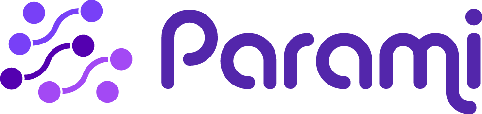

Online Coding Platform – Student Usage Guide

Getting started
Welcome to the online coding platform. This guide walks you through logging in, opening your browser-based workspace, editing a web page, and using the built-in AI assistant.
What you get
- VS Code in Browser — Each team gets a dedicated code-server instance accessible via
code-server-container-platform.parami-ai.org. - Live Web Preview — Vite dev server with hot-module replacement (HMR) accessible via
mysite-container-platform.parami-ai.org. - Central Login Portal — Single sign-on at portal-container-platform.parami-ai.org.
Step-by-step usage guide
1. Log in to the platform
- Open the central login portal.
- Enter your team credentials.
- You will be taken to your dashboard.
Tip
Bookmark the portal link so you do not have to type the URL each time.
2. Open your workspace and live preview
- Launch the browser-based VS Code workspace.
- When VS Code asks whether to trust the workspace, click Trust.
- Open the live website preview to see your site in real time.
Trust the workspace
If you do not click Trust, you will not be able to edit files or use the AI plugin.
This is safe: the VS Code workspace runs on our server, not on your personal computer.
3. Edit HTML and see changes live
- Open the HTML file you want to change.
- Make your edits.
- Watch the updates appear instantly in the live preview window.
4. Use the Zebra Zoo Code AI plugin
The Zebra Zoo Code AI plugin helps you edit your site faster.
- Import the default settings.
- Configure your OpenRouter API key.
- Ask the AI to make changes for you.
- Review the AI’s suggestion:
- Accept it if it looks good.
- Reject it if it does not meet your needs.
- In either case, type feedback in the prompt box to help the AI learn what you want.
Watch your spending
Every prompt and every word the AI processes costs money. Keep requests clear and focused to avoid unexpected charges.
Tips and reminders
- Keep your OpenRouter API key private; do not share it or commit it to your project repository.
- Always click Trust workspace when opening VS Code, or you will not be able to edit or use the AI features.
- Review every AI suggestion before accepting or rejecting it, and give feedback when needed.
- Watch your OpenRouter spending: every word you send and receive costs money, so make prompts concise.
- If the live preview stops updating, refresh the preview panel or restart the Vite dev server from the terminal.
- Each team container is isolated on the backend network, so your workspace and preview are independent from other teams.
For further help, contact the platform support team.